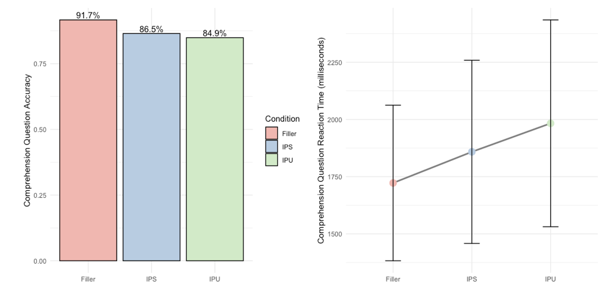
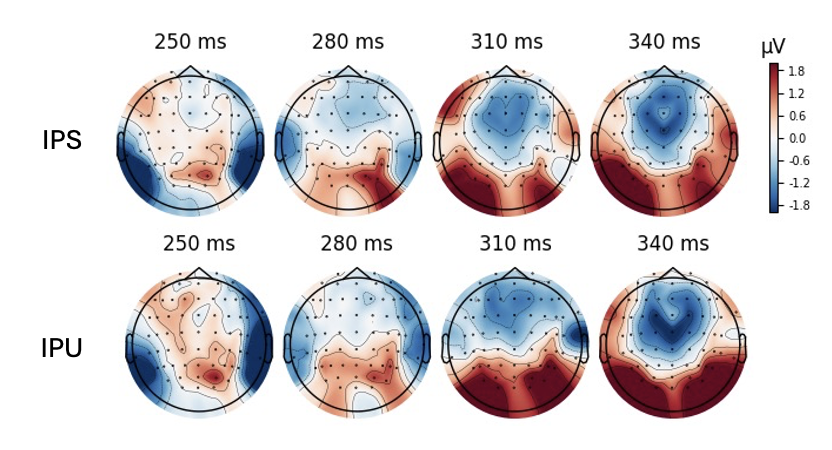

1. Behavioral Analysis
It was found that when the hidden rules of idioms are violated, they're processed slower and comprehension becomes worse. This behavioral cost was the initial sign that the brain expects specific contextual prerequisites alongside idioms.

2. Decoding Brainwaves (EEG)
EEG allows us to look inside the brain by capturing the electrical signals generated by neurons. This experiment utilized a high-density 64-electrode montage to map activity across the entire scalp.
3. Peaking Inside The Brain
Just a quarter of a second after seeing the first word of the idiom, a P3b component was detected. This can be interpreted as the brain's internal alarm bell flagging contextual violations.

4. The Bayesian Model
A Bayesian linear mixed effects model indicated that there was a significant difference between how the brain treated the two experimental conditions. There was a larger amplitude in the IPU condition compared to the IPS condition, reflecting the brain's immediate response to the missing contextual prerequisite.
This is an abridged version of a peer-reviewed study.
By utilizing well-established techniques in cognitive neuroscience (EEG), this study provides evidence for a novel hypothesis: Certain aspects of language (e.g., idioms) not only express conventionalized meanings but come with deeply engrained assumputions that determine their use. What is shown here is that the brain never stops predicting what's coming next in conversation, even when we're entirely unaware of this process. From a methodological perspective, this work speaks to the great utility that Bayesian modeling provides, particularly when it is necessary to compare how different factors affect a singular outcome.